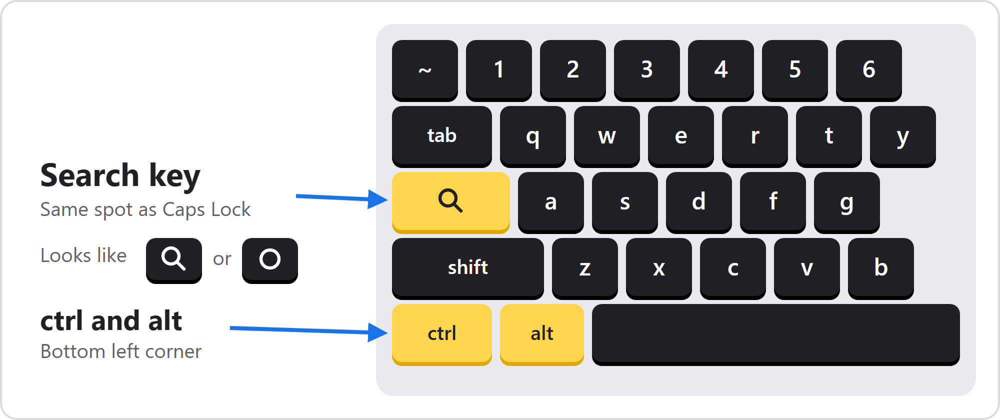
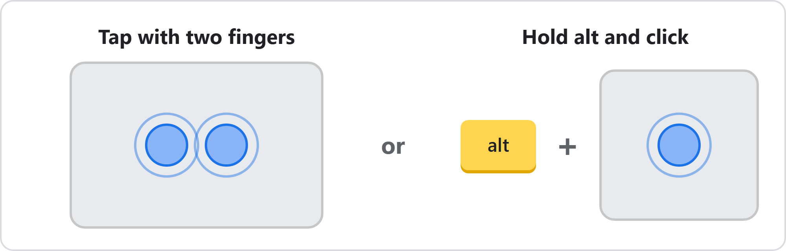
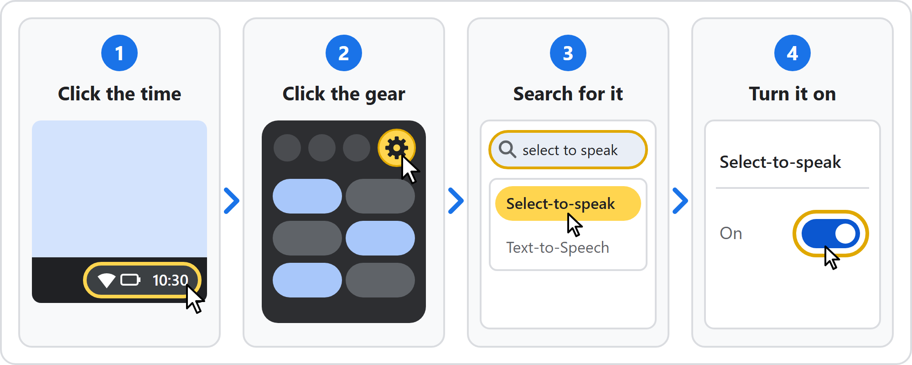
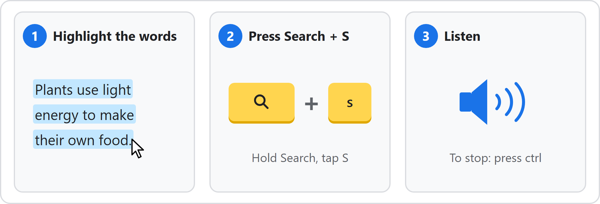
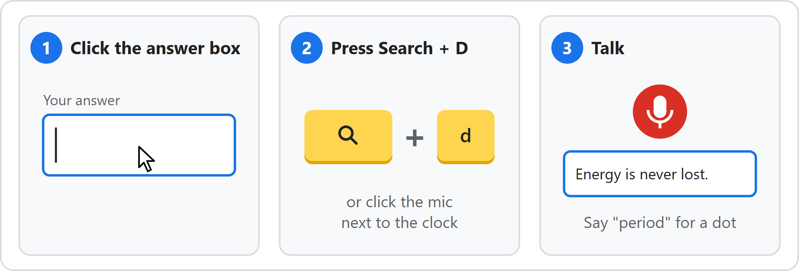
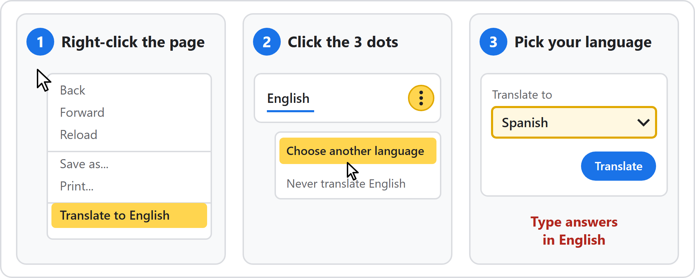
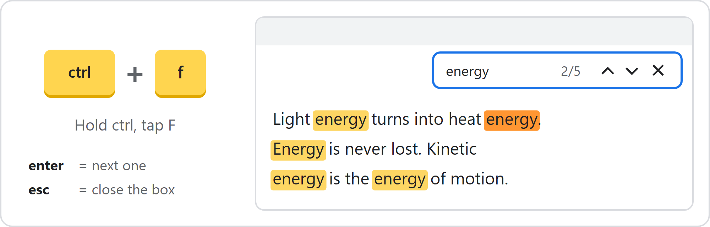
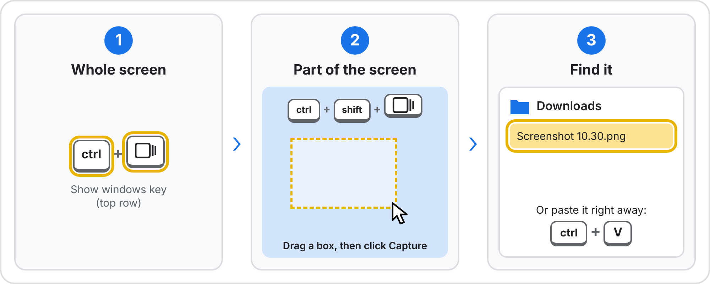
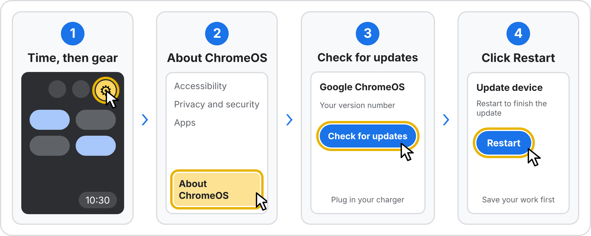

Before you start
Learn three keys, how to right-click, and how to turn a helper on.

Right-click: tap the touchpad with two fingers, or hold alt and click.

Turn on a helper (one time only):
- Click the time in the bottom right corner of the screen.
- Click the gear to open Settings.
- Type the helper's name in the search box at the top: select to speak or dictation.
- Click it, then flip the switch on. It stays on next time you sign in.

Read aloud (Select-to-speak)
The Chromebook reads words on the screen out loud: questions, hints, and articles.
- Turn on Select-to-speak (see Before you start).
- Highlight the words: click at the start and drag to the end.
- Hold Search and tap S.
- To stop, press ctrl.

Faster: hold Search and click one line to hear just that line. Use headphones in class.
Talk instead of type (Dictation)
The Chromebook types what you say into the answer box.
- Turn on Dictation (see Before you start).
- Click in the answer box.
- Hold Search and tap D, or click the mic next to the clock.
- Talk. Say "period", "comma", or "question mark" to add those marks.
- Press Search + D again to stop.

Check before you submit: read what it typed and fix wrong words. The checker gets confused by misspelled words, so one wrong word can turn your answer red.
Translate the page
Chrome can show the page in your language. You still type answers in English, because the checker grades English words.
- Right-click an empty spot on the page.
- Click Translate to English.
- A small box opens at the top. Click its 3 dots, then Choose another language.
- Pick your language and click Translate.

To see English again: click English in that small box.
Find a word (ctrl + F)
Jump to every spot on the page that uses a word. Great for finding the part of the article a question asks about.
- Hold ctrl and tap F. A box opens at the top right.
- Type the word.
- Press enter to jump to the next one. The orange one is where you are.
- Press esc to close the box.

Take a screenshot
Save a picture of your screen to show your teacher a problem or keep your work.
- Whole screen: hold ctrl and tap Show windows (the top row key with a box and two lines).
- Part of the screen: hold ctrl + shift and tap Show windows. Drag a box around what you want, then click Capture.
- Find it in your Downloads folder, or paste it right away with ctrl + V.

Your keyboard has a screenshot key? Press it to open the same tool.
Check for updates
Updates fix bugs and keep helpers working. Plug in your charger and save your work first.
- Click the time in the bottom right, then the gear to open Settings.
- At the bottom left, click About ChromeOS.
- Click Check for updates. If an update is found, it downloads by itself. No button? You are already up to date.
- When it finishes, click Restart in the Update device box next to the clock.

See a blue or orange "Restart to update" box? Your school sent the update. Click it when you are at a good stopping point. Can't update? Tell your teacher.
More quick tricks
Hold the first key, then tap the next one.
| To do this | Press |
|---|---|
| Make words bigger | ctrl + = (the plus key) |
| Make words smaller | ctrl + - (minus) |
| Back to normal size | ctrl + 0 (zero) |
| Fix a word with a red squiggle under it | Right-click the word, then click the right spelling |
| Undo a mistake | ctrl + Z |
| Bring back a tab you closed | ctrl + shift + T |
| Put the article and questions side by side | alt + [ for left, alt + ] for right |
| Turn CAPS LOCK on or off | alt + Search |
| Fix a stuck page | ctrl + R |
| See every shortcut | ctrl + alt + / |
If something does not work
- The switch is gray or missing: the school controls that setting. Tell your teacher.
- Search + S does nothing: check that Select-to-speak is on, then highlight the words first.
- No Translate in the menu: right-click an empty spot, not a word or picture.
- Still stuck: take a screenshot with ctrl + Show windows (the top row key with a box and two lines) and show your teacher.